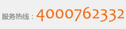

产品名称：超滤净水机
产品型号：SJ-UF-5F
产品功能：森极超滤厨房净水机（UF），采用国际领先超滤技术，运用五级净化工艺，有效滤除杂质、胶体、铁锈、 细菌、大分子有机物等，保留并添加水中有益矿物质和微量元素，净化后的水质晶莹清澈、甜美甘醇，广泛适用于家庭、服务及办公场所， 为解决家庭及企事业单位饮用净水需求提供完美的解决方案。
| 技术参数 | 产品特点 | |
| 适用水质 | 市政自来水 | 1.造型简约时尚，净化功能安全彻底 2.超薄箱式设计，节省安装空间更方便 3.快速接头和滤芯，安装维护方便 4.涉水部件采用食品级材料，安全放心 5.净化水达到生饮标准，烹饪、煲汤等更卫生可口 6.可连接多台管线饮水机，组建小型终端饮用水系统，提供冷/热净水 7.以超滤技术为核心净化工艺，滤除有害物质，软化水质，生成水分子团水，创造健康饮用水环境 |
| 环境温度 | 5~38℃ | |
| 进水压力 | 0.1~0.4MPa | |
| 产水流量 | 60L/h | |
| 产品规格 | 375×130×386mm | |

联系电话：400-076-2332、021-60511132 | 传真：021-57932112
联系地址：上海市金山区龙胜路1000号 | © 2014 senjishiye.com All Rights Reserved 上海森极实业有限公司